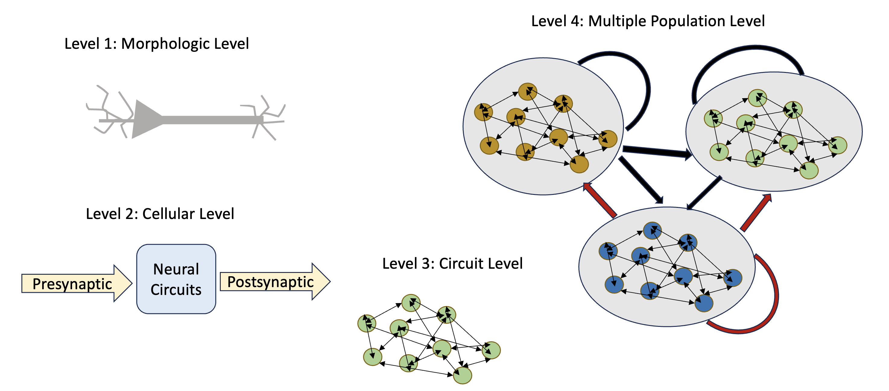

This site presents core concepts and models in computational neuroscience. We begin with single-neuron modeling, including the classic Leaky Integrate-and-Fire, Hodgkin-Huxley, and Connor-Stevens models, which capture the electrical behavior of individual neurons through varying levels of biophysical detail. Additionally, we will offer sample simulations to demonstrate how neuron behavior can be modeled and visualized using our simulator, NeuronTune.
Neuron modeling can be studied at various levels, including the morphological level (using cable theory to model the structure and passive properties of neurons), the single-cell level (which focuses on the behavior of individual neurons), the circuit level (which examines interactions within a single network of neurons), and the population level (which explores the dynamics of multiple circuits or large groups of neurons).

This website will be exploring neuron modeling at the single-cell level, based on established models. We will provide detailed formulas and theoretical frameworks, primarily derived from the work of Dayan and Abbott, to describe the behavior of individual neurons, focusing on their electrical properties and dynamics.
Leaky Integrate-and-Fire (LIF) Model: A simplified model that captures how a neuron's membrane potential evolves in response to input currents. It generates a spike once a threshold is reached, making it efficient for large-scale neural simulations. Learn more →
Hodgkin-Huxley Model: A detailed biophysical model describing how neurons generate action potentials through ion channel dynamics. Developed in 1952, it remains foundational in neuroscience. Learn more →
Connor-Stevens Model: An extension of the Hodgkin-Huxley model that adds A-type potassium currents to better represent repetitive firing in certain neuron types. Learn more →